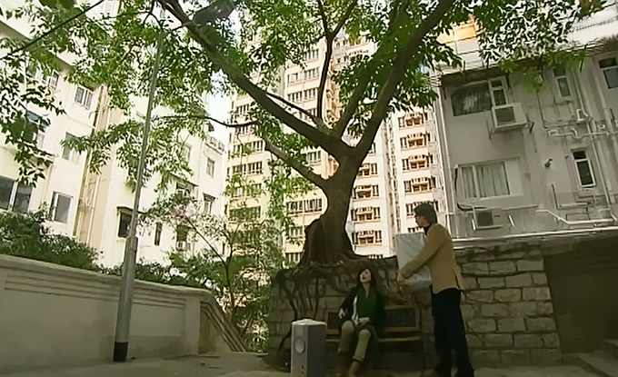
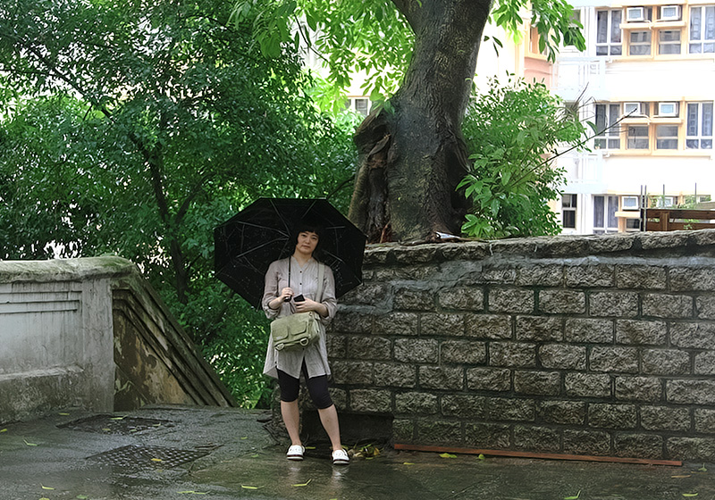

位于上环的磅巷，原本是英国人用来放置充公牲畜的畜栏(Cattle Pound)，后来原址辟作一条叫Pound Lane的街道，但译者却将Pound误译为磅，差了十万八千里。此次去香港，磅巷也在我们计划的路线上，因为那里有TBV电视剧《心战》出现的一棵榕树。《心战》是近些年难得看过的一部TVB剧，有别于往常师奶们喜闻乐见的主题，讲的是心魔，而结局又有些出人意料的好片。剧里的那棵榕树能感应人心，根据人的心境而变色，但剧中只有树艺师章世婷能看到。
去的那天一出住处就开始下雨，先是密密的小雨，穿过荷李活道往上爬坡时雨大起来。我们在坡道台阶一侧躲雨，暴雨如注中，仍有匆匆的香港人上上下下淡定穿行，这样的天气在他们看来应该再平常不过了。雨没有停下来的意思，等到稍小些我们便继续往上，到石阶顶部发现这里已是磅巷。再爬过一截石阶，左顾右盼搜寻大榕树时，发现右边有对情侣正对着路口一棵树拍照，心想肯定就是这里了。
剧中那棵榕树就立在小路转角，一侧往下是窄窄一截石梯。没想到在这样的大雨天，竟然还有人跟我们一样为大榕树而来，也算是有缘。他们看见我们走过去，也相视一笑。 榕树其实不大，事实上跟很多榕树比起来算小的，比电视剧里看到的小多了。躲在榕树对面的楼下拍照，离开之际，雨突然就停了，乌云散去，阳光洒下，果然是一棵能感应人心的树。
